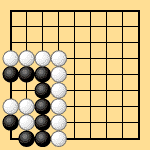
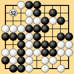
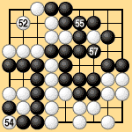
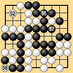

| 6.8 Thousand-Year Ko (1) |
|---|
| Thousand-year ko refers to positions like the one in Dia. 6-13-1. Usually the ko is resolved during the game, but if the position remains on the board at the end of the game it can cause problems in territory rules. The current Japanese rule is that one side must capture and connect the ko, making a seki, before the game can end. If this rule is applied to Dia. 6-13-2, Black wins by one point. If Dia. 6-13-2 is played out by area rules II or III or territory rules I, however, White wins by one point. |
|  |  |
| Dia. 6-13-1 | Dia. 6-13-2 (52) |
|---|
| Under area rules III Black 53 passes, making White 52 the last competitive play. White plays 54 in Dia. 6-13-3, Black plays 55, White connects the ko with 56, and Black captures at 57. White 58 and Black 59 pass, ending the game. White has forty points; Black has thirty-nine. |
|  | |||
|
| Under territory rules I Black 53 and White 54 pass, establishing the preliminary end of the game. Then Black plays 55 in Dia. 6-13-4, White takes the ko, Black plays 57, and White 58 connects the ko. Black 59 and 60 pass, ending the game. White has thirteen points of territory minus one prisoner: total twelve. Black has twelve points of territory minus one prisoner: total eleven. |
|  | |||
|
| By capturing and connecting a thousand-year ko after the first pass in area rules III, or after the preliminary end of the game in territory rules I, a player can gain two points as compared with traditional territory rules. This is an indication that there is something illogical about traditional territory rules. |